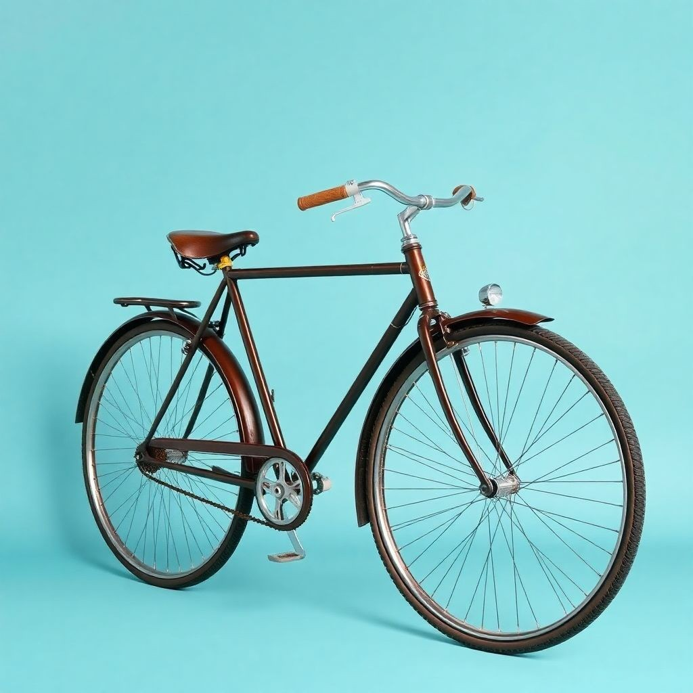
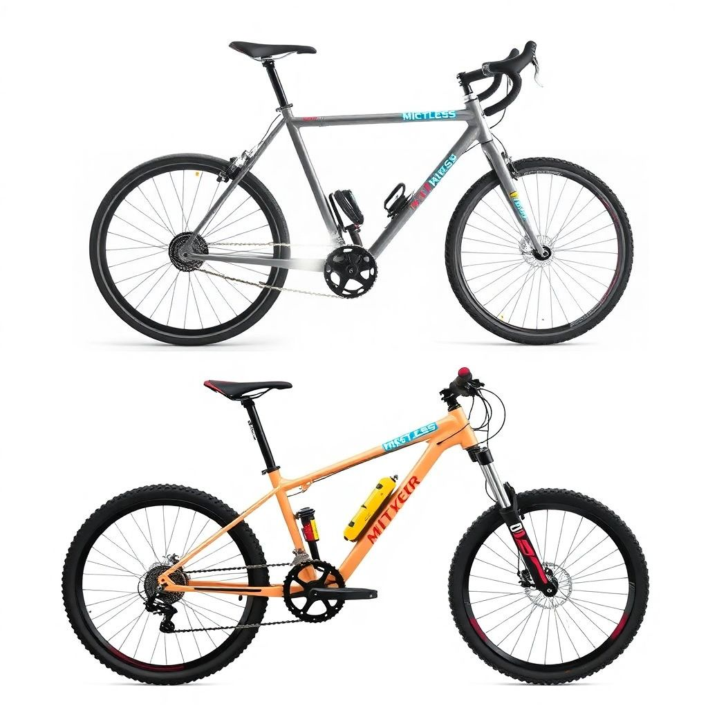

Історія велосипедів

Велосипед був винайдений у 19 столітті і став одним із найпопулярніших засобів пересування. Перший велосипед, відомий як "дресина", з’явився у 1817 році завдяки німецькому барону Карлу фон Дресу.

Згодом велосипеди еволюціонували: з’явилися педалі, ланцюговий привід і гумові шини, що зробило їх більш зручними та практичними.